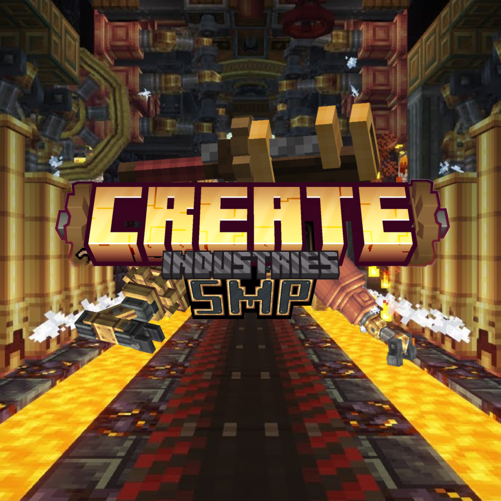

Create-focused
Machines, automation and engineering.

Create Industries SMPA Create-focused Minecraft SMP built around machines, factories, automation, and multiplayer.
THE SERVER
A multiplayer server running the official Create Industries SMP Season 2 modpack. Keep it simple, build something huge, and make your industry.
Machines, automation and engineering.
Build factories and production lines.
Play, trade and build with others.
READY?
Download the pack, join the Discord, and get building.